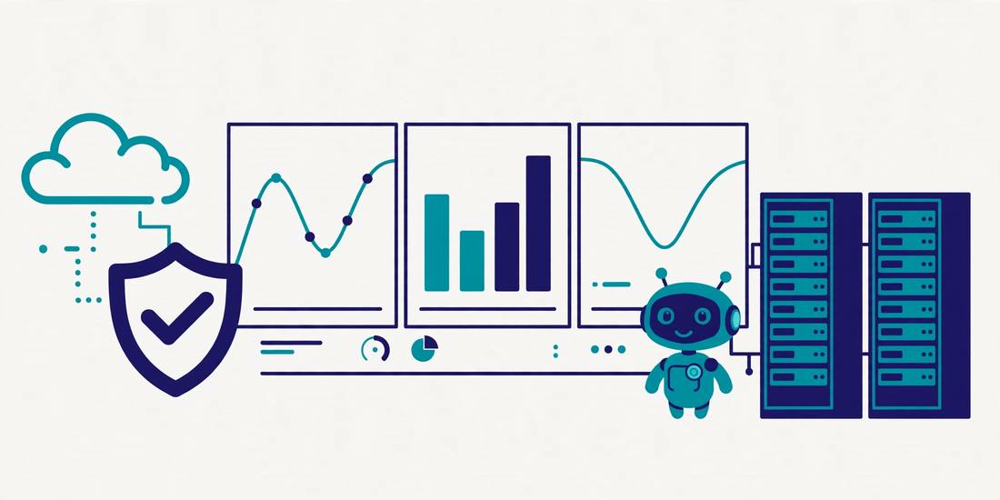

2026年のITインフラ技術動向 ― 運用現場から見た変化
2026.11.07
ITインフラを取り巻く環境は、ここ数年で大きく変化しています。 生成AIの実用化、クラウド活用の高度化、セキュリティ要件の変化など、 運用現場にも直接影響するテーマが増えてきました。
本記事では、日々の運用設計や改善活動に携わる立場から、 注目している技術動向を整理します。

生成AIが運用業務に入ってきた
障害対応時の一次切り分け、ログの要約、手順書やドキュメント作成の支援など、 生成AIの活用は実験段階から実務レベルに入ってきました。
定型的な作業をAIやAIエージェントに任せ、 人は判断や設計に集中するという流れは、今後さらに進むと考えられます。
一方で、出力内容の正確さを確認する手間や、 扱わせる情報の範囲を管理するといった、 新しい注意点も増えています。
自動化はスクリプトから「仕組み」へ
手順の自動化は、個別のスクリプト作成から、 IaCによる構成管理の標準化へと中心が移っています。
プラットフォームエンジニアリングという考え方も広がり、 インフラを「製品」として提供し、 利用側がセルフサービスで使える形にする発想が注目されています。
属人化を避け、再現性と品質を仕組みで担保する方向性は、 運用改善の観点からも重要です。
監視からObservability（可観測性）へ
システムが複雑化する中で、死活監視やリソース監視だけでは 状態を把握しきれなくなってきました。
メトリクス、ログ、トレースを組み合わせて状態を把握し、 障害の検知そのものよりも、原因特定までの速さを重視する Observabilityの考え方が広がっています。
運用設計の段階で「どう観測するか」を決めておくことが、 これまで以上に重要になっています。
ゼロトラストが前提の設計に
境界防御に頼る構成から、IDを中心としたアクセス制御へ。 ゼロトラストは特別な取り組みではなく、 設計の前提になりつつあります。
セキュリティは後付けではなく、設計の初期段階から組み込むものへと変わり、 運用面でも権限管理や証跡（ログ）の重要性が増しています。
クラウドコストも設計対象に（FinOps）
従量課金のクラウドでは、コストそのものが運用品質の一部です。
リソースの適正化や不要リソースの棚卸しは、 特別なプロジェクトではなく通常業務になりつつあります。 技術とコストの両面を見る視点が、運用担当者にも求められます。
運用エンジニアに求められること
- 個別技術の深さに加え、自動化やAIを使いこなす力
- ドキュメント整備や標準化といった「仕組みを作る」スキル
- 変化を前提に、継続的に学び続ける姿勢
自動化やAIが進むほど、手作業そのものの価値は下がりますが、 仕組みを設計し、改善し続ける仕事の価値はむしろ上がると考えています。
まとめ
技術動向は追うだけでは意味がなく、 自分の現場で小さく試して取り込むことが大切です。
本ブログでも、実際に検証した内容や運用改善の知見を 順次発信していきたいと思います。
← Blog一覧へ戻る